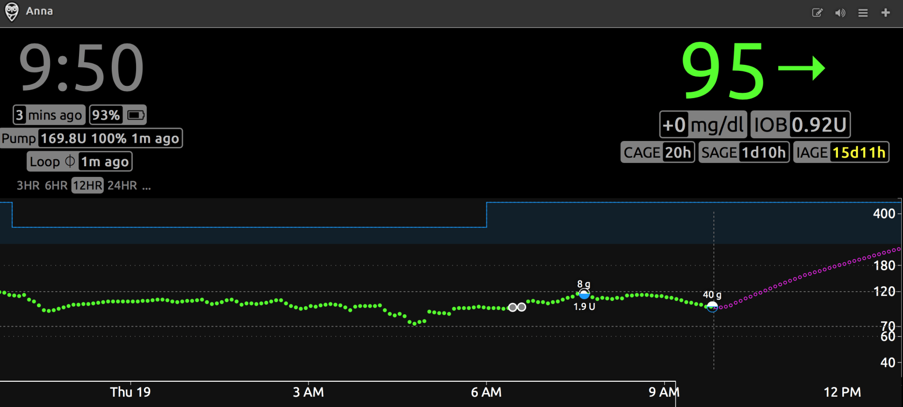
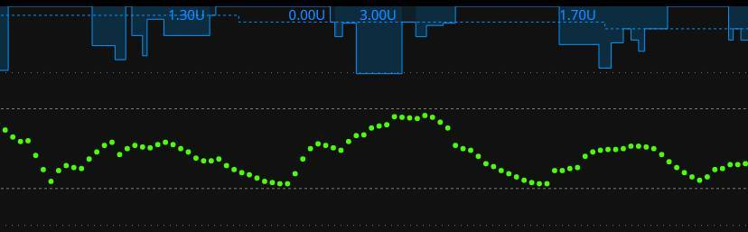
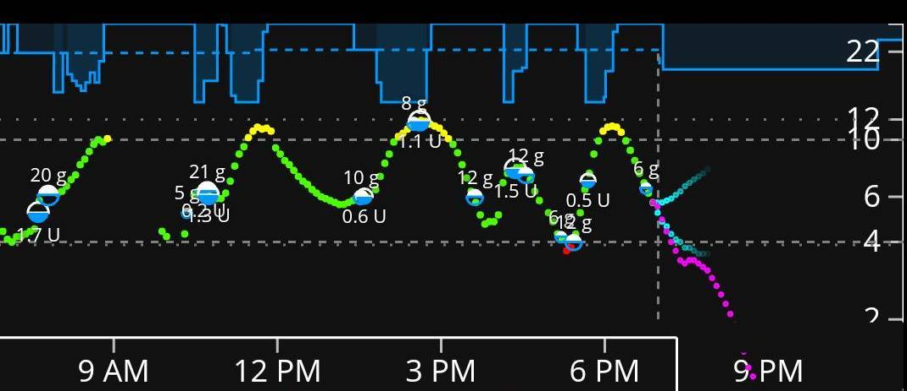
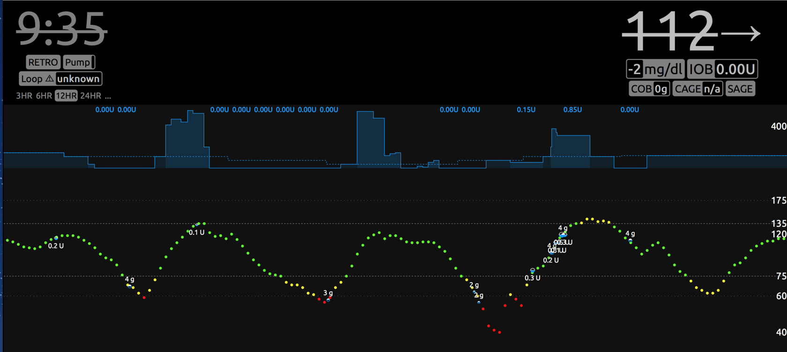
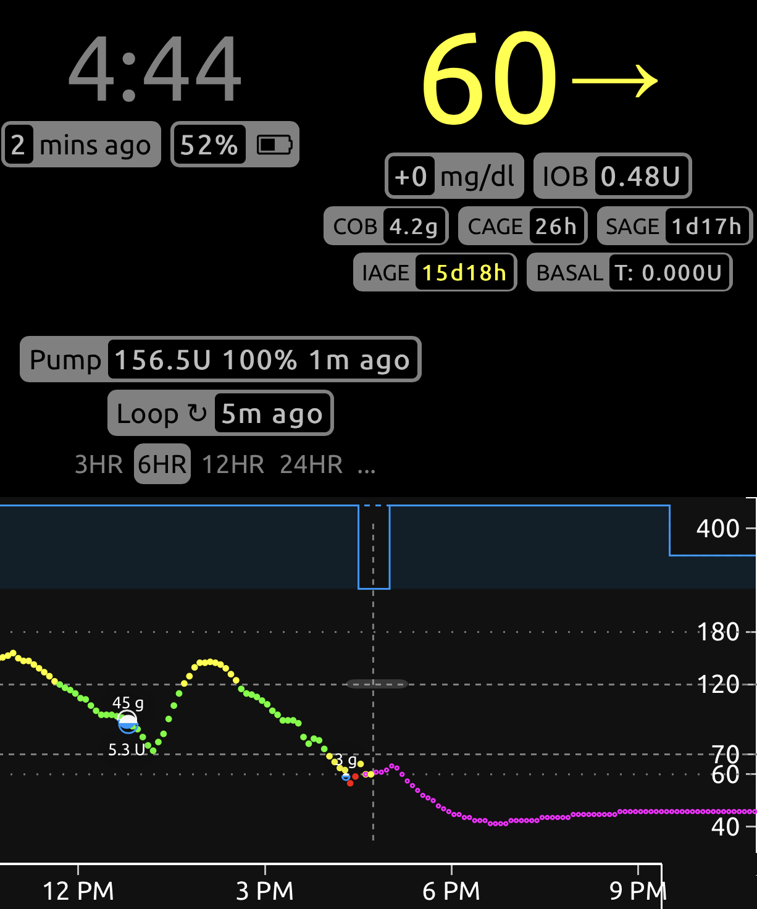

Начало настройки⌁
Как начинают 90% «луперов»:
- Подключают помпу.
- Закрывают петлю.
- Когда графики ГК не такие гладкие, как ожидалось, пользователь пытается поменять настройки и коэффициенты не открывая петлю.
Проблема таких действий в том, что изменение настроек «на лету» с замкнутой петлей может вызвать трудности и ошибки в использовании АПС. Ниже несколько рекомендаций и разъяснений, которые упростят переход к замкнутой петле. Первое с чего следует начать, это как можно лучше подобрать первичные настройки и коэффициенты.
Сначала попробуйте открытую петлю.⌁
Полезный совет – откройте петлю хотя бы на несколько дней и не принимайте никаких временных базальных и болюсных рекомендаций от Loop. Просто смотрите и привыкайте к программе, не спешите, используйте Loop как «пульт» от помпы – запись углеводов, ввод болюса. Открытая петля (в отличие от закрытой петли с автоматическими корректировками) будет хорошим способом заметить различия в работе инсулина между старой и новой помпой, а так же при переходе с терапии на ручках.
Примечание: при внесении углеводов и выборе иконки пиццы на открытой петле Loop может порекомендовать меньший болюс с намерением восполнить остаток необходимого инсулина с помощью увеличения ВБС в будущем. В таких ситуациях вам, возможно, придется вручную вводить оставшуюся часть болюса позже, аналогично обычному использованию помпы для медленно усвояемых блюд, таких как пицца или плов, поскольку Loop не будет автоматически устанавливать временные базальные скорости.
Если вам нужны дополнительные знания, вы можете прочитать отличные книги о настройках помпы и их значении. Например, «Think Like a Pancreas» - отличный справочник для понимания главных принципов помповой терапии.
Важные термины и настройки:
- Базальные дозы должны поддерживать уровень глюкозы в крови на постоянном уровне в отсутствие других факторов (например, пищи, лекарств, физической активности и т. д.). *Болюсы должны возвращать целевой уровень глюкозы в крови после еды.
- ISF (insulin sensitivity factor), фактор чувствительности к инсулину - это количество ммоль/л, на которое одна единица инсулина снижает уровень глюкозы в крови за 4 - 6 часов без каких-либо других влияний.
- DIA (duration of insulin action) - это продолжительность активности инсулина, как долго инсулин влияет на уровень глюкозы в крови.
- IOB (insulin on board) - количество активного инсулина в организме сверх базальной потребности, оставшегося от прошлых болюсов или повышенной ВБС. Пример: базальная скорость 0,5 ед/ч + болюс 0,25 ед или увеличенный ВБС 0,75 ед/ч на 1 час дадут IOB=0,25 ед.
- CR (carb ratio), углеводный коэффициент - это количество углеводов, покрываемых одной единицей инсулина.
Очевидно, что две неверно подобранные настройки будут выглядеть правдоподобно, если они «сбалансированы». Проблема в том, что эти неправильные настройки скомпенсируют вас не во всех ситуациях и график не будет плавным. Например: недостаток базы можно компенсировать регулярным приемом пищи с высоким содержанием углеводов. Если же приемы пищи перестанут быть такими регулярными, то ГК станет высокой без восполнения нехватки базы от болюсов (речь так же о неверном CR). Потратьте время на проверку коэффициентов — это облегчит и улучшит использование закрытой петли.
1. Время действия инсулина (DIA)⌁
Большинство пользователей помп считают DIA 3-4 часа, и для этого есть весомая причина: в помповой терапии время действия инсулина используется только для расчета оставшегося активного инсулина (т. е. IOB) в любой момент времени после болюса. Вот и все. Количество активного инсулина при использовании помпы нужно обычно при необходимости внести корректировку (болюс), если уровень глюкозы в крови застрял на высоком или уменьшить ВБС, если идет вниз. То есть, DIA используется как приблизительная величина для корректировки ГК.
Но в петле DIA играет огромную роль в восприятии и обработке Loop-ом изменений значения уровня ГК. DIA используется для расчета количества активного инсулина в организме (IOB). Активный инсулин учитывается при каждом расчете петли (раз в пять минут), чтобы рекомендовать ВБС или болюс.
Также учитывается сила (имеется в виду концентрация) инсулина в любой момент времени. Замкнутая петля учитывает время ввода инсулина и как скоро он достигнет пика (около 60-90 минут). Другими словами, Loop учитывает количество инсулина, прошел ли он свой пик или же находится в медленной, хвостовой части (влияние на ГК будет снижено во втором случае) поэтому DIA очень много значит в закрытой петле.
Что будет если использовать слишком короткое DIA в замкнутой петле? Слишком маленькое время действия инсулина даст эффект накопления и петля будет предполагать, что инсулин «исчезает» быстрее чем на самом деле. Если вы получаете стабильный уровень глюкозы с замкнутой петлей и коротким DIA, вероятно, скорости базала слишком маленькие чтобы скомпенсировать вашу потребность (при выборе DIA 6 часов и недостатке базы ГК неуклонно будет ползти вверх). В случае правильно настроенной базы и коротким DIA при замкнутой петле, скорее всего, случится гипогликемия.
Итак, на короткое DIA указывает:
- снижение ГК ниже целевого уровня,
- отрицательный IOB из-за предшествующих до этого уменьшенной ВБС или отключения базы.
Модели инсулина
В Loop есть четыре модели инсулина. Три являются экспоненциальными моделями (быстро действующий взрослый, быстро действующий дети и fiasp), а одна — более старая и менее точная модель walsh).
Рекомендуется использовать одну из экспоненциальных кривых инсулина (быстро действующий взрослый, быстро действующий дети или fiasp). Их стандартное значение DIA равно 6 часам. Такое время действия инсулина поможет предотвратить эффект накопления в замкнутой петле. Модель walsh, если вы хотите попробовать ее, должна быть установлена на DIA от 5,5 до 6 часов. Но экспоненциальные кривые являются предпочтительным вариантом. Узнать больше о моделях инсулина и о том, как они помогают считать активный инсулин, можно в разделе «Алгоритмы» в looptips.
Скорости базала⌁
Теперь, когда вы разумно выбрали модель инсулина и DIA, обязательно проверьте свою базу. Качественно подобранная база — это подготовка к успешному использованию Loop. Подбор базы довольно прост и не требует нескольких дней голодания.
Откройте петлю или же пользуйтесь только программой для мониторинга. Выберите период времени, не ешьте, не упражняйтесь, не сидите в горячей ванне и проверьте как база «держит» уровень ГК. Неважно, попали вы в цель или нет, идея состоит в том, чтобы просто получить нулевой дополнительный активный инсулин от любых болюсов, ВБС и наблюдать, что происходит в эти часы. Оценивайте уровень глюкозы в крови примерно за период в 3-4 часа без влияния болюсов на еду или активности, только потом переходите к следующему участку дня.
Многие люди, особенно маленькие дети, не в восторге от проверки базы натощак, поэтому ищите возможность сделать это занятие менее обременительным. Если вам необходимо есть во время теста, используйте низко-углеводную еду или перекус, для которого вы знаете, сколько точно требуется инсулина (или вообще не нужен болюс), эта еда вам «знакома» и не потребует корректировок. Для нас это две очень большие яичницы-болтуньи (или три маленьких) с шариком сыра 8 г. Если она ест эту еду, подъем ГК будет медленным и плавным. Через три часа после приема пищи болюсный и пищевой эффекты приглушены, и мы можем начать наблюдать, остается ли уровень ГК стабильным. Например, вот недавний тест на проверку базы с открытой петлей, который мы провели и убедились, что уровень ГК может оставаться стабильным без помощи со стороны петли.

3. Фактор чувствительности к инсулину (ISF)⌁
Фактор чувствительности к инсулину (ISF) — следующий логичный шаг для проверки коэффициентов после проверки базы и получения стабильной ГК на открытой петле. Попробуйте съесть одну или две таблетки глюкозы, подождите пока ГК выйдет на плато на более высоком уровне, и введите безопасный болюс, который, по вашему мнению, вернет вас к целевому значению.
Наблюдайте за снижением глюкозы в течение следующих 3-4 часов, уровень ГК должен снова стабилизироваться. Насколько упал уровень глюкозы в крови? Сколько единиц инсулина вы использовали? Разделите два числа, и вы получите ISF. Если ваш уровень ГК снизился на 0,8 ммоль/л (15 мг/дл) при болюсе 0,5 единиц инсулина, ваш ISF составляет приблизительно 1,6 ммоль/л (30 мг/дл) на единицу. 0,8 / 0,5 = 1,6
Подбор ISF — важный шаг к успешной компенсации при использовании замкнутой петли. Он используется в каждом вычислении петли и играет значимую роль в кривой прогноза на 6 часов вперёд. Если у вас наблюдаются резкие скачки ГК, это может означать что ISF нуждается в корректировке.
Некоторые определения и термины:
Фактор чувствительности к инсулину описывает как раз то, насколько чувствительна ваша глюкоза крови к действию инсулина. Если уровень глюкозы в крови трудно снижается и для корректировки высокого сахара вам нужно больше инсулина, ваша чувствительность «слабая». Если уровень ГК быстро снижается и требуется меньше инсулина для коррекции, ваша чувствительность к инсулину «сильная». Большинство пользователей считают, что необходимо настраивать ISF постепенно увеличивая значение. Терминология иногда сбивает с толку, потому что некоторые думают о терминах «слабый» и «сильный» с точки зрения того, как будет вести себя Loop.
Если вы увеличиваете значение ISF (например, изменяете его с 2,5 до 3), вы ослабляете силу корректировок Loop, потому что вы сообщаете — ваша чувствительность к инсулину выше, вам не нужно много инсулина для снижения высокого уровня глюкозы в крови и коррекция будет успешной.
Чтобы избежать путаницы, связанной со словами «слабый» и «сильный», вместо этого разберем фактическое значение ISF на примере. Если ISF ниже чем нужно, на графике будут «американские горки», и ВБС от нуля до высоких значений.
Вот несколько примеров графиков из группы Looped, когда слишком низкий ISF с большей вероятностью является причиной американских горок (график 1). На втором и третьем графике видно, что виновником этих горок может быть не только ISF и определить причину точно сложнее. Но, быстроизменяющиеся высокие временные базальные скорости, сопровождаемые очень быстрым падением ГК и отключением базы, обычно являются причиной заниженного ISF. Увеличьте значение ISF (например, с 2,5 до 3 ммоль/л или с 50 до 55 мг/дл), чтобы Loop знал — каждая единица инсулина на самом деле оказывает большее влияние, чем вы думали ранее.



4. Соотношение углеводов⌁
Теперь, когда у вас есть основные настройки ISF и DIA, сразу возникает соблазн замкнуть цикл и двигаться дальше. Честно говоря, не настолько уж и сложнее проверить CR в закрытой петле, чем на открытой (если вы тщательно проверили другие коэффициенты).
Правильный углеводный коэффициент вернет уровень глюкозы в крови к исходной точке, примерно в течение 3 часов, исключая влияние физической активности.
Примечание: прием пищи с высоким содержанием жира / белка может привести к более длительному влиянию на уровень глюкозы в крови.
Неправильный CR приведет к тому, что глюкоза крови через несколько часов после еды станет выше или ниже исходной точки ГК (перед приемом пищи).
Например, этот график показывает слишком агрессивный CR. Через три часа после еды уровень активного инсулина составляет около 0,5 единиц, уровень глюкозы в крови намного ниже, чем в начале приема пищи, следовательно, требуется меньше инсулина.

Если вы видите, что ваш CR приводит к целевому уровню глюкозы в крови через 3 часа, но вас не устраивает пик от еды, то, возможно, стоит обратить внимание на длительность паузы и кнопку «pre-meal», которая работает один час с заданной пониженной временной целью ГК. Уменьшение числа CR во избежание резкого скачка ГК после еды, скорее всего, приведет к гипогликемии через 2-3 часа после еды.